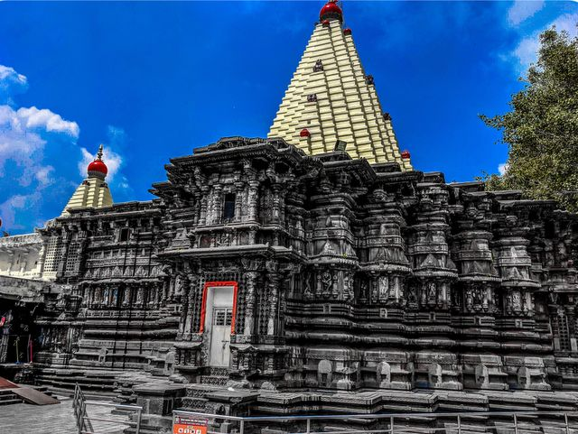

Mahalakshmi Temple

1. History of the Mahalakshmi Temple
The history of the Mahalakshmi Temple is ancient and spans several centuries, with contributions from various dynasties:
Ancient Origins (7th Century CE onwards): The temple architecturally belongs to the Chalukya empire and is believed to have been first built around 700 AD. References to the temple are found in multiple Puranas, indicating its deep-rooted importance in Hindu tradition.
Dynastic Patronage and Expansion: Evidence shows that various dynasties, including the Konkan king Kamadeo, Chalukyas, Shilaharas, and Yadavas of Devagiri, visited and contributed to the temple.
11th Century: King Gandaraditya of the Shilahara Dynasty embellished and completed parts of the temple, including building the path for circumambulation.
12th Century: The Matulinga (a Shiva Lingam) was installed during the Yadava period.
18th-19th Centuries: The Garud Mandap, an outermost hall, was added between 1838 and 1843. Other additions and renovations occurred during the Maratha reign, with wood construction seen in later sections.
2. Structure and Architecture of the Mahalakshmi Temple
The Mahalakshmi Temple is a stunning example of the Hemadpanthi architectural style, characterized by its intricate carvings and mortar-less construction in parts.
# Main Deity and Sanctum:
The central idol of Goddess Mahalakshmi is made of black stone, about 2 feet 8.5 inches to 3 feet in height, and weighs approximately 40 kilograms. It is adorned with a crown featuring a five-headed serpent (Sheshnag) and a Shiva Lingam (though often covered by ornaments).
Unlike most Hindu deities that face north or east, the Mahalakshmi idol uniquely faces west (Pashchim). This orientation is significant for the "Kiranotsav" phenomenon.
The Goddess holds a Mhalunga (citrus fruit) in her lower right hand, a mace (kaumodaki) in her upper right, a shield (khetaka) in her upper left, and a bowl (panpatra) in her lower left. A stone lion, her vahana (vehicle), stands behind her.
The temple complex has four main entrances, with the Mahadwar (main entrance) located on the western side.
Upon entering the Mahadwar, one encounters deepamaalas (lamp pillars) and enters the Garuda Mandap, characterized by square pillars and wooden arches typical of Maratha temples.
Further inside are the Kurma Mandap and Ganapati Chowk, leading to the main shrine.
Jyotiba Temple

1. History of the Jyotiba Temple
The history of the Jyotiba Temple is rich with both legend and documented construction.
Ancient Roots and Legend: The presiding deity, Lord Jyotiba, is believed to be a powerful incarnation of the Hindu trinity – Brahma, Vishnu, and Mahesh (Shiva). Legend has it that these three deities united to manifest as Jyotiba to vanquish the evil demon Ratnasura,
who was terrorizing the region. Jyotiba is also said to have assisted Goddess Mahalakshmi (of Kolhapur) in her battles against other demons like Kolhasura and Raktabhoj.
This divine intervention solidified his importance as a protector deity. He is also associated with the Nath cult and is sometimes considered an incarnation of Kedarnath.Original Construction and Renovations: The original temple was built by a devotee named Navji Saya (also known as Kedar Baba) from the village of Kival. The major renovation and expansion of the main Jyotiba temple, as it stands today, were carried out in 1730 by Maharaja Ranoji Shinde of Gwalior.
Subsequent additions were made by other rulers.
2. Structure and Architecture of the Jyotiba Temple
The Jyobita Temple is a stunning example of the Hemadpanthi architectural style, characterized by its intricate carvings and mortar-less construction in parts.
The complex comprises several distinct shrines, the most prominent being the main Jyotiba Temple.
along with those dedicated to Kedareshwar and Ramling. There are also smaller shrines for deities like Goddess Yamai, Goddess Chopdai, and Lord Kalabhairav.
# Architectural Features:
Material: The temples are primarily built from fine black basalt stone, locally sourced, which imparts a distinctive appearance.
Carvings: The walls and pillars are intricately adorned with carvings depicting mythological stories, delicate floral motifs, and geometric patterns, showcasing the artistry of the craftsmen, who were known as "Kedar" craftsmen.
Dimensions: The main Jyotiba temple is approximately 55 feet in length, 37 feet in width, and 77 feet in height, including its spire. The second Kedareshwar temple is about 49 feet x 22 feet x 89 feet high, while the Ramling temple is 13 feet x 13 feet x 40 feet high.
Kopeshwar Temple

1. History of the Kopeshwar Temple
The history of the Kopeshwar Temple stretches back centuries, with its origins debated but often traced to the 7th century AD, likely initiated during the Chalukya dynasty's reign. However, its construction was a prolonged affair, hampered by frequent conflicts among regional rulers. It wasn't until the 12th century, under the patronage of the Shilahara King Gandaraditya (1109-1178 CE) and later the Yadava kings of Devgiri (specifically King Singhanadev around 1214 AD), that the temple's construction was finally completed.
The temple's name, "Kopeshwar," translates to "wrathful god," and is rooted in a significant Hindu legend. It tells of Lord Shiva's intense anger (kopa) after his wife, Sati, immolated herself in her father Daksha's sacrificial fire, feeling insulted. Lord Vishnu intervened to pacify Shiva, bringing him to the site where the temple now stands. This legend explains why the temple uniquely houses both a Shiva lingam (Kopeshwar) and a Vishnu lingam (Dhopeshwar) in the same sanctum sanctorum. Another interesting historical detail related to this legend is the absence of Nandi (Shiva's bull) at the temple's entrance, as Sati had ridden Nandi to her father's home.
Over its long history, the temple has also faced periods of damage. It is believed that Islamic invaders, such as Aurangzeb, mutilated many of its exquisite carvings. Despite these challenges, the temple has endured, standing as a testament to the perseverance of ancient Indian craftsmanship and religious devotion.
2. Structure and Architecture of the Kopeshwar Temple
The Kopeshwar Temple is a stunning example of the Hemadpanthi architectural style, characterized by its intricate carvings and mortar-less construction in parts.
# Swarga Mandapa (Hall of Heavens):
This is the first and most striking section. It is a circular, open-air hall supported by 48 intricately carved stone pillars, each unique in shape (round, square, hexagonal, and octagonal).
A distinctive feature is the large circular opening in the ceiling, approximately 13 feet in diameter, open to the sky. This opening is believed to have facilitated the escape of smoke during Yagnas (fire rituals) and symbolically represents a connection to heaven.
# Sabha Mandapa (Assembly Hall):
Accessed from the Swarga Mandapa and also having side entrances, this square-shaped hall is supported by 60 exquisitely carved pillars.
The carvings depict various Hindu mythological stories, including scenes from the Ramayana and Panchatantra, as well as deities, animals, and human figures.